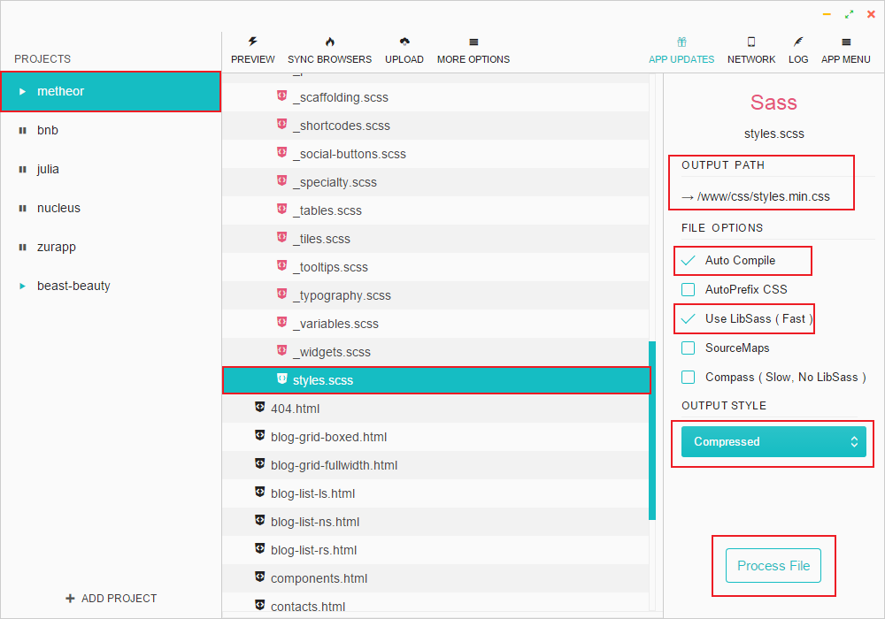

Multipurpose means you can use it for any type of mobile / desktop application (more options to come with new updates).
It comes with 4 pre-built color schemes to choose from. And it is not considering that it's built with SASS which gives you creative freedom to make your own unique skin with ease. Unleash your creativity.
Metheor is great option not only for building great landing page (4 available vaersions) it also includes Blog, Gallery, Contacts (with working Ajax form), Help Center and 404 Templates to build full-featured corporate website.
It's layout is based on advanced responsive Bootstrap 3 grid which makes your website looking perfectly on any device and screen sizes.
Go ahead and build your unique and appealing showcase website for your next beautiful application.
Please note: each of 3 skins has the same folder structur as shown in the table.
| File Path | Description |
|---|---|
| main | Root folder |
| main/Metheor | This folder includes all HTML, CSS, Javascript, Fonts and Image files of the template. |
| main/Metheor/css | Includes style.min.css file that is compiled from styles.scss. This is all theme styles including Bootstrap and some modifications to 3rd party plugins. There is also styles.css uncompressed styles with table of contents for those who prefer vanilla css over SASS. |
| main/Metheor/css/colors | Includes all css files with color schemes. How to chang color scheme? |
| main/Metheor/fonts | Iconic fonts, that gives you customizable vector icons (more than 800 icons in total). For more information on how it works, please see Changing Icons Section |
| main/Metheor/img | This folder includes all graphic assets of the template. When you need to change images, slides, backgrounds, etc..this is the place to go. |
| main/Metheor/js/vendor | This folder includes all 3rd party jQuery Plugins used in this template. |
| main/Metheor/js/scripts.js | All template custom scripts and plugins initialization. |
| main/Metheor/mailer | This folder includes php and js files for Ajax contact form. See Configure Contact Form section. |
| main/Metheor/sass | This folder includes all source .scss (including Bootstrap sass) files from which compiled styles.css. |
| main/PSD |
PSD Folder includes all .psd files. Please see the complete list of files here |
| main/Help | Folder includes documentation you are reading. |
In this section you will learn how to setup SASS environment, editing and compiling .scss files, complete template SASS structure.
SASS is a CSS pre-processor, meaning that it extends the CSS language, adding features that allow variables, mixins, functions and many other techniques that allow you to make CSS that is more maintainable, themable and extendable.
For more information visit SASS official website.
For compiling SASS files into CSS we used software called "Prepros". Visit it's website at https://prepros.io/. Basic version is completely free and available for Mac and Windows.
| SASS File Name | Elements Inside |
|---|---|
| bourbon folder | A simple and lightweight mixin library for Sass. |
| colors folder | color.scss file which you can use to easily generate new color schemes. |
| _buttons.scss | Styles for all possible buttons variations. |
| _carousel.scss | Modification of Owl Carousel styles. |
| _comments.scss | Comments component styles. |
| _components.scss | Includes custom modification of 3rd party plugins: Google Maps, Magnific Popup and Custom Scrollbar Plugin. |
| _footer.scss | Footer styles. |
| _forms.scss | Form elements styles including: inputs, textarea, checkboxes, radios, custom selectboxes, validation styles. |
| _grids.scss | All Isotope grid types supported by this template. Please note: template based on Bootstrap 3 Grid system which can be found sass/bootstrap/grid.scss |
| _intro.scss | Intro sections styles (all versions). |
| _mixins.scss | Custom mixins that mix properties from existing styles. |
| _navbar.scss | Navbar styles including different navbar (header) types: Sticky, Dark / Light. It also includes main navigation (menu) styles including collapsed state. |
| _navs.scss | Customization of default Bootstrap Tabs component and Portfolio Filters component. |
| _page-title.scss | Page titles styles. |
| _panels.scss | Customization of default Bootstrap Panels/Accordion component. |
| _post.scss | Styles of elements associated with Blog posts including single post, like: Post Meta, Tags, Pagination, etc. |
| _preloader.scss | Page preloader component styles. |
| _scaffolding.scss | Body styles, utility classes, page container. |
| _shortcodes.scss | Theme Shortcodes - Page Building Blocks including: Icon Box / Image Box, Clients, Contacts Split Block, Split Section, Full Width Section, Counters, Video Popup Button, Sharing Links, Pricing Table, Testimonials Carousel, Device Gallery, Image Carousel. |
| _social-buttons.scss | Includes 38 social buttons styles with brand colors. |
| _specialty.scss | Styles of Specialty pages like: 404. |
| _tables.scss | Tables styles. |
| _tiles.scss | Tile component styles. |
| _tooltips.scss | Customization of default Bootstrap Tooltips component. |
| _typography.scss | Headings, paragraphs, lists, links, blockquotes styles, etc... |
| _variables.scss | File that holds all variables. There you can globally change colors, font-sizes, margins, paddings, etc... |
| _widgets.scss | Styles of all widgets of the template found inside sidebar. |
| styles.scss | File aggregates all other .scss files via @import. This one is compiled to styles.css |
To chang color scheme using SASS you need to do following:
Another way is to change color variables inside Metheor/sass/variables.scss and re-compile styles.scss into styles.css.
Yet another way, if you prefer to use vanilla css, go to css/colors/ folder take any .css file in it change color hexes directly in css and link this modified color.css file after main css style in the <head> section of your html document.
We created special .php and .js file for processing Ajax contact form which can be found inside Metheor/mailer folder.
There is also configuration file config.ini where you can set Email addres to receive massages and Subject. You can open it with any text editor. See screenshot below:
We used different packs of font icons in this template.
Adding Font Awesome icons:
<i class="fa fa-iconName"></i>
Adding Brand icons:
<a href="#" class="sb-brandName"><i class="fa fa-brandName"></i></a> <!-- For example --> <a href="#" class="sb-facebook"><i class="fa fa-facebook"></i></a>
Adding Pixeden Stroke icons:
<i class="pe-7s-iconName"></i>
Adding Feather icons:
<i class="icon-iconName"></i>
Complete list of Font Awesome icons
Complete list of Pexeden Stroke icons
While creating this template we used some Javascript (jQuery) plugins to extend its functionality:*
jQuery v2.1.4 - most popular feature-rich JavaScript library.
Modernizr - JavaScript library that detects HTML5 and CSS3 features in the user’s browser.
Bootstrap - Most popular HTML, CSS, and JS framework for developing responsive, mobile first projects on the web.
Velocity.js - Accelerated JavaScript animation.
Smooth Scroll - An extension for smooth scrolling in Google Chrome.
Isotope - jQuery plugin for categorizing, sorting, and filtering a responsive grid of items.
Magnific Popup - Responsive lightbox & dialog script with focus on performance.
Owl Carousel 2 - Touch enabled jQuery plugin that lets you create a beautiful responsive carousel slider.
Gmap 3 - A JQuery plugin to create google maps with advanced features.
Parallax.js - Reacts to the the position of your cursor or orientation of your smart device.
Stellar.js - jQuery plugin that provides parallax scrolling effects to any scrolling element.
Pace.js - Automatic page load progress bars.
jQuery custom content scroller - Highly customizable custom scrollbar jQuery plugin.
iCheck - Super customized checkboxes and radio buttons for jQuery.
*To get more detailed information about how to use / customize these plugins please visit their official websites.
Please be informed that we DO NOT provide support to any third party plugin's. We can only answer simple usage questions or issues related to incompatibility with the template.
All Photoshop files related to this template you will find in the PSD folder. Please note, these files are used as mockups and can be slightly different from the final template. But you can still find necessary graphic assets.
While making this theme we used third party plugins, images, icons, fonts, etc... and want to thank their creators: